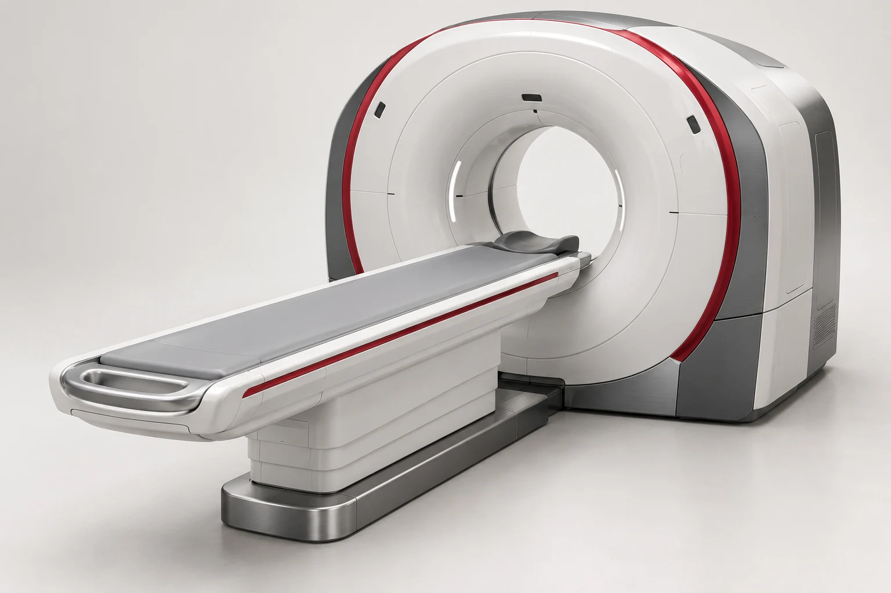

Precisión · Perspectiva · Movimiento
Una nueva dimensión de nuestra identidad.
Rojo brillante, volumen y luz. Un lenguaje visual que conecta la identidad de la clínica con la tecnología diagnóstica.
Tecnología con perspectiva humana.
Recursos para la web informativa
Una perspectiva elevada que resalta el volumen y la precisión del equipamiento.

El profesional y el estudio como protagonistas de una escena cercana y tecnológica.
Propuesta visual. Las escenas son ilustraciones, no fotografías de equipos ni de personal de la clínica. El emblema utiliza capas con profundidad CSS; las escenas utilizan renders con movimiento de perspectiva. La animación respeta la preferencia de movimiento reducido del dispositivo.